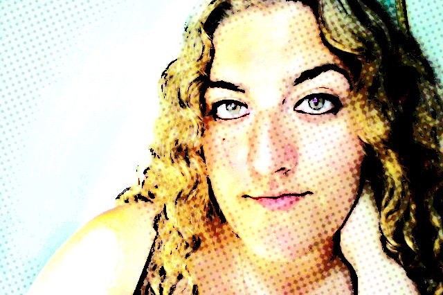

About Me

My name is Christina Constabile. Currently residing in Los Angeles, I am originally from a small town in Central New York.
I graduated from Canisius College in Buffalo New York. In three and a half years, I received a Bachelors of Science degree in Digital Media Arts and a Bachelors of the Arts in Communication Studies. I've taken graduate classes in International Business at the Brandeis International Business school in Waltham, Massachusetts. And I am currently enrolled in a certificate program at UCLA for Software Development.
I've dabbled a bit in graphic and print design as well as advertising and public relations. My passions lie in photography and 3D animation. I am currently looking to further my career in something I'm passionate about that allows me to create.
I am a travel photographer by hobby and hope to travel the world extensively some day. I have participated in two photography workshops. One workshop has taken me to Italy and another to Poland and Tunisia. In my own spare time I enjoyed traveling to France, Greece and England.
This page serves the purpose of highlighting some of my development work.
In my spare time I blog, paint customized wine glasses or am exploring Los Angeles.
Connect With Me